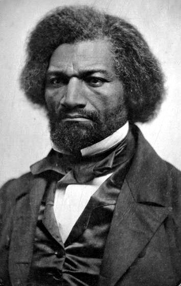

B1 · American History
The Text
Play the audio and follow along, then read it again on your own. Hover over a highlighted word to see what it means.
Listen & Read
Frederick Douglass
His owner's wife taught him the alphabet. Her husband stopped the lessons, and explained exactly why.
When Frederick Douglass was about eight years old, the wife of the family that owned him began teaching him his letters. Her husband found out and ordered her to stop. Teaching a slave to read, he said, would make him unfit to be a slave: he would become dissatisfied and unmanageable.
Douglass was listening. He wrote later that this was the first time anybody had explained the system to him, and that he understood from that moment what reading was worth.
He was born into slavery in Maryland around 1818 and never knew his exact birthday, which was normal: ages were not recorded for enslaved children. He was separated from his mother as a baby and saw her only a handful of times before she died.

After the lessons stopped he taught himself. He traded bread to poor white boys in the street in exchange for reading lessons. He copied letters from the markings on timber in a shipyard. At about twelve he bought a schoolbook of famous speeches with fifty cents he had saved, and read the arguments against slavery in it until he knew them.
At fifteen he was sent to a farmer with a reputation for breaking difficult young men. After months of beatings, Douglass fought back physically and won, and the beatings stopped. He always described that fight as the turning point of his life, the moment a slave became, in his own mind, a man.
He escaped in September 1838 and it took less than twenty-four hours. Dressed as a sailor, carrying identification papers borrowed from a free Black seaman, he took a train north, then a steamboat, then another train, and arrived in New York the next morning.
In the north he became a speaker for the anti-slavery movement, and he was so effective that audiences began to doubt he had ever been enslaved; he did not sound like their idea of a slave. His answer was to publish his life story in 1845, with real names and places in it.
That answer created a new problem. The book proved he was telling the truth, and it also told his legal owner exactly where he was. He sailed to Britain and Ireland, spoke to large audiences for two years, and British supporters raised the money to buy his freedom legally so that he could return.
Back in the United States he started his own newspaper, The North Star, with a line under the title: “Right is of no sex — Truth is of no color”. He argued for the vote for women as well as for Black Americans, and was the only Black man to speak at the women's rights convention at Seneca Falls in 1848.
During the Civil War he pressed Lincoln to let Black soldiers fight, and then to pay them the same as white soldiers. He met the president three times. He lived until 1895, long enough to see slavery abolished and long enough to watch the country start taking the new rights back again — which is what most of his late speeches are about.
Vocabulary
- unfit — not suitable or not able to do something
- dissatisfied — not happy with a situation
- to trade — to give one thing in exchange for another
- a shipyard — a place where ships are built and repaired
- a beating — a violent attack in which somebody is hit repeatedly
- a turning point — the moment when an important change begins
- identification papers — documents that show who a person is
- an audience — the people watching or listening to a speaker or performance
- a convention — a large meeting of people with a shared interest or cause
- to abolish — to end a law or system officially
Interactive Exercises
Practice
Complete each exercise, then click Submit to see your score and an explanation for every answer.
Speaking & Writing
Discussion
There are no right answers here — use these to practice speaking, or write a short answer to each.
- The owner said that reading would make an enslaved person “unmanageable”. What did he understand about education?
- Douglass published his real name and address to prove he was telling the truth, and put himself in danger by doing it. Was that worth the risk?
- He argued for the rights of women as well as his own. Why do you think he connected the two?